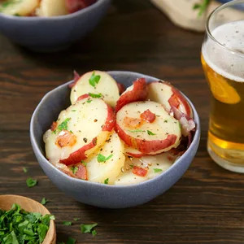

German Potato Salad

Description
This authentic German potato salad recipe came from Speck’s Restaurant, which was a famous eating establishment in St. Louis from the 1920s through the ‘50s. I ate lunch there almost every day and always ordered the potato salad.
Ingredients
- Red Potatoes
- Bacon
- Sugar
- Apple Cider Vinegar
Steps
- Scrub the potatoes clean and place them in a large Dutch oven or stockpot. Fill the pot with enough water to just cover the potatoes. Bring them to a boil over medium-high heat. Reduce the heat, cover the pot and simmer the potatoes for 25 to 30 minutes until they’re tender and easily pierced with a fork. Drain the potatoes and allow them to cool.
- Heat a large skillet over medium heat. Add the diced bacon and cook until crisp, about 7 to 10 minutes. Use a slotted spoon to move the bacon to a paper towel-lined plate. Drain off all but four tablespoons of the bacon drippings. Add the chopped onions to the skillet and cook them in the bacon drippings until tender and translucent.
- Add the flour, salt, celery seed and pepper to the skillet with the onions, and stir everything together. Slowly add the sugar, cider vinegar and water, stirring the mixture as you do. Increase the heat to medium-high and bring the dressing to a boil; stir and cook the dressing for about two minutes until it has thickened. Turn off the heat
- When the potatoes are cool enough to handle, use a sharp knife to cut them into 1/4-inch-thick slices. Add the sliced potatoes and cooked bacon to the skillet and turn the heat to low. Stir the potatoes, bacon and dressing together gently until the salad is heated through, about five minutes. Sprinkle freshly minced parsley over the top and serve the salad warm.